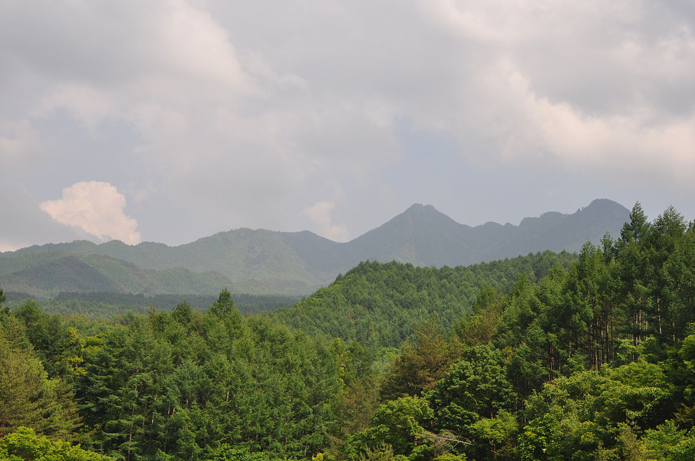
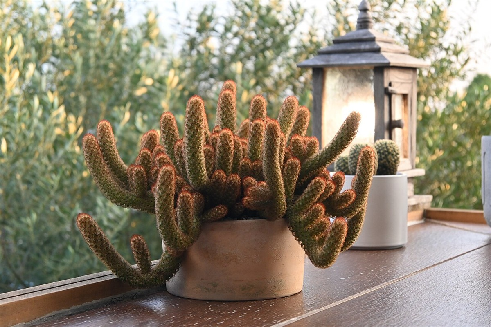
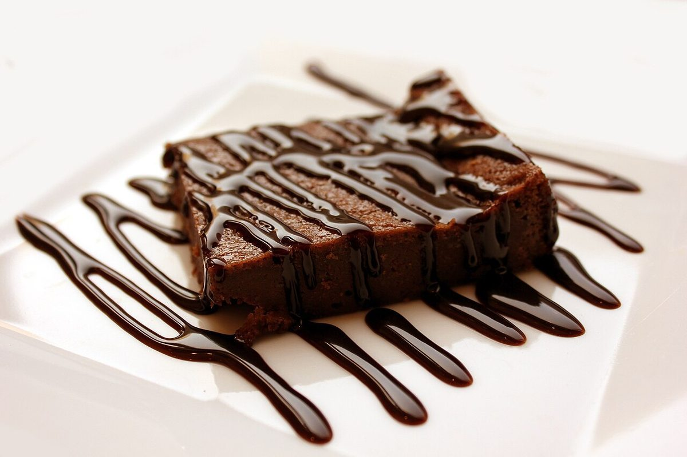
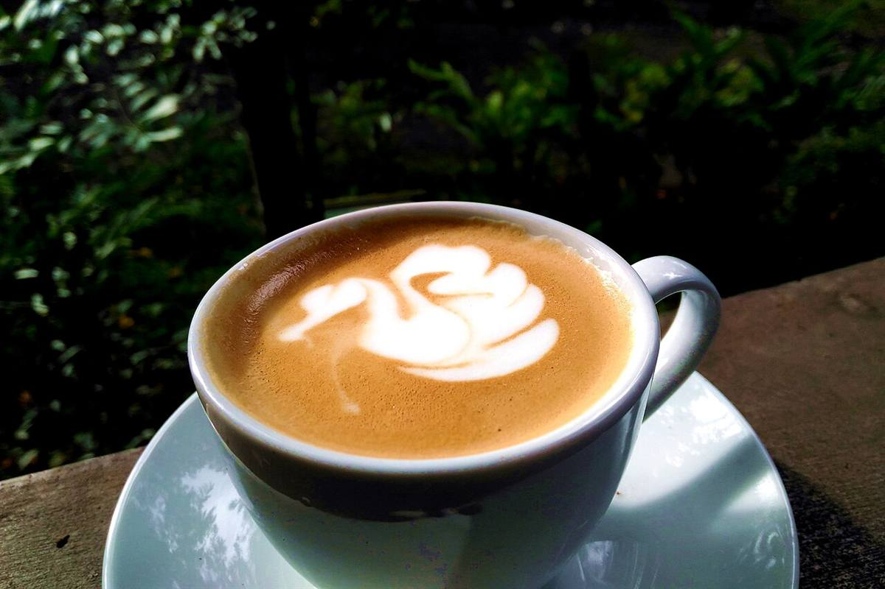
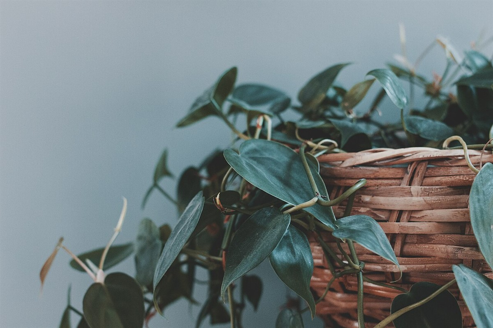
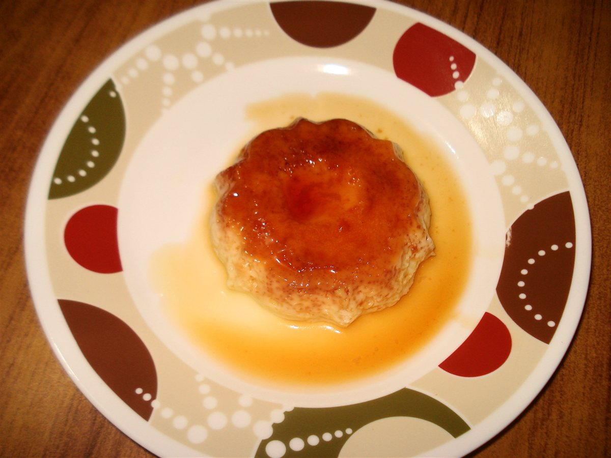
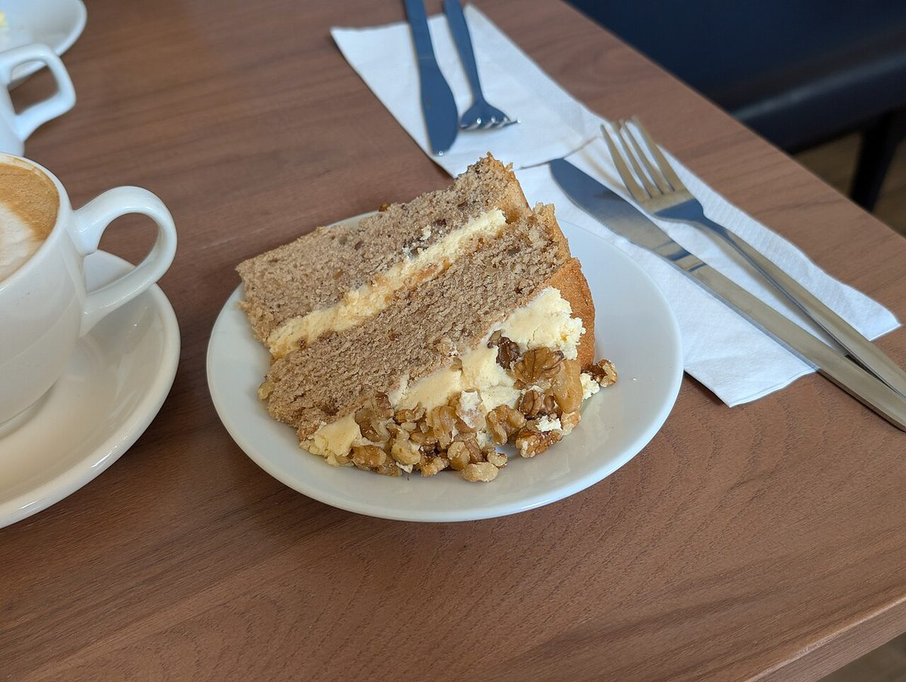

CAFE / 熊本市西区谷尾崎町
Cafe Luff
金峰山のふもと、おばあさまの家の2階で。気ままに「らふ」な時間を。
2025年5月、当時大学生だった店長が始めた小さなカフェ。力を抜いて過ごせる一軒家の時間を、そのまま言葉と色にしました。

写真はフリー素材のイメージで、店舗の実際の様子ではありません。実際の店内・商品写真はご提供いただいたものに差し替えます。
お店の由来・想い
ABOUT
ラフに楽しめる場所を
Cafe Luff(カフェ ラフ)は、熊本市西区谷尾崎、金峰山の登山口に近い住宅の2階にあるカフェです。店名には「気ままに“らふ”な時間を過ごしてほしい」という思いが込められていると紹介されています。
2025年5月1日にオープン。店長はおばあさまの家の2階を間借りして始められました。入口で靴を脱いでスリッパに履き替えて上がる、おうちのようなつくりです。
※店名の綴り「Luff」の意味は確認できていません。

メニュー
MENU
紹介記事では、次のような品が紹介されています(内容は日によって変わる場合があります)。営業時間・価格・最新の内容は準備中です。











口コミ
VOICE
イメージ例
階段を上がると窓から光が入っていて、友だちの家に来たみたいに肩の力が抜けました。
イメージ例
固めのプリンとコーヒーをゆっくり。時間を気にせず過ごせるのがうれしいです。
イメージ例
山のふもとの静かな場所で、ひとりでも落ち着けるカフェ。また来たいと思いました。
※上の3件は制作側が用意したイメージ例で、実在の口コミではありません。
アクセス
ACCESS
- 住所
- 〒860-0044 熊本県熊本市西区谷尾崎町１０２−５
- 電話
- 準備中
- 営業時間
- 準備中
- @_cafe_luff
写真クレジット
PHOTO CREDITS
- images/pudding.jpg: Zain Abdullah / Pudding (WordPress Photo Directory) / CC0 1.0(撮影地: 撮影地不明)/ 出典
- images/pudding2.jpg: Miansari66 / Sweet pudding / CC0 1.0(撮影地: 撮影地不明)/ 出典
- images/chocolate-cake.jpg: Andy Li / Baileys Chocolate Cake - Cafe Coho 2026-01-08.jpg / CC0 1.0(撮影地: イギリス・ブライトン近郊)/ 出典
- images/cheesecake.jpg: Andy Li / Pistachio cheesecake - Blossom Cafe Bar 2024-07-15 / CC0 1.0(撮影地: 撮影地不明)/ 出典
- images/coffee-cake.jpg: Stephanie McCabe / Coffee and coffee cake (Unsplash).jpg / CC0 1.0(撮影地: アメリカ・カリフォルニア州)/ 出典
- images/walnut-cake.jpg: Andy Li / A slice of coffee and walnut cake - Audit Room Cafe, Petworth House.jpg / CC0 1.0(撮影地: イギリス・ペットワース)/ 出典
- images/brownie.jpg: johnkamatsos4 / Chocolate-dessert-brownies-cake / CC0 1.0(撮影地: 撮影地不明)/ 出典
- images/latte.jpg: Abdulrohmatt / Cup of coffee with latte art 2016 / CC BY-SA 4.0(撮影地: インドネシア・西ジャワ)/ 出典
- images/latte-wood.jpg: Artem Beliaikin / The cup of coffee on a wooden table (47939081677).jpg / CC BY 2.0(撮影地: 撮影地不明)/ 出典
- images/black-coffee.jpg: Jon-Isac Lindberg / White cup of black coffee.jpg / CC0 1.0(撮影地: 撮影地不明)/ 出典
- images/houseplant.jpg: Greg Weaver / Overgrown Houseplant (Unsplash).jpg / CC0 1.0(撮影地: 撮影地不明)/ 出典
- images/cactus-window.jpg: PattayaPatrol / DFC 2282 Sunlit curly cactus spilling from a small terracotta pot on a wooden windowsill beside a rustic lantern.jpg / CC BY-SA 4.0(撮影地: タイ)/ 出典
- images/mountains.jpg: Yoshi Canopus / Ogura Mountain-Kita Aiki Village, Nagano, Japan.jpg / CC BY-SA 3.0(撮影地: 長野県)/ 出典
ライセンスの詳細は creativecommons.org をご覧ください。